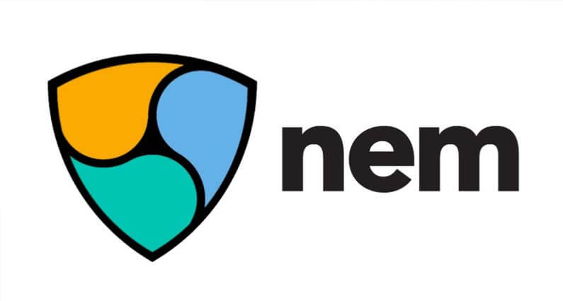
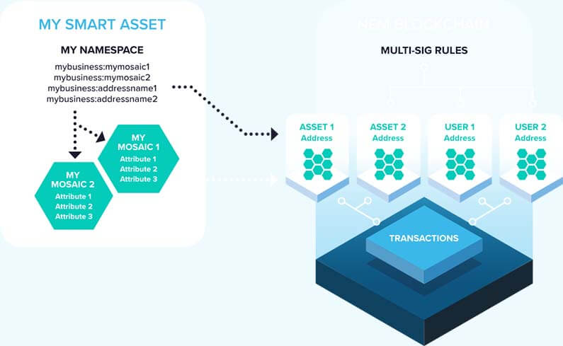

Mi az a NEM (XEM)? Útmutató kezdőknek
NEM az öregebb kriptovaluták közé tartozik, pályafutását 2014-ben kezdte meg. NEM „New Economy Movement” az alapoktól építette fel a platformját különös figyelmet fordítva a bővíthetőségre és sebességre. A kódot Java nyelven írták az alapoktól, tehát nem egy másik projekt leágazásaként jött létre.
Amíg sok más kriptovaluta csak most kezdett el dolgozni azon, hogy nagy vállalatoknak segítsen blokklánc technológia beépítésével a rendszereikbe, addig NEM sokkal előrébb tart és már működőképes terméke is van amelyet használnak.
Mi az a NEM?
NEM a világ első „Intelligens eszköz” blokklánca. A vállalkozások számára készített NEM egy olyan platform amely egyszerűsített módszert kínál a tranzakciós főkönyv fenntartására.
Hogy növeljék bővíthetőségüket és vonzóbbá váljanak a vásárlók számára, NEM teljesen újraírta a forráskódját C++-ban. „Catapult” névre keresztelt projekt segítségével a tranzakciók száma néhány százról 4000 tranzakció/másodpercre nő. Ez a verzió jelenleg béta teszt alatt van, valamikor az év folyamán fogják közzétenni.
Más okos szerződéses platformnál sok bővíthetőségi problémával néznek szembe. NEM erre a problémára azzal a megoldással állt elő, hogy az okos szerződéseknek nem kell a blokkláncon lefutniuk, hanem a blokkláncon kívül is lefuthat akár vállalati szervereken. Csak a tranzakciókat jegyzik fel a blokkláncra a NEM API segítségével.
Intelligens eszköz rendszer (Smart Asset System)
Intelligens eszközök olyanok mint az Ethereum okos szerződések csak sokkal könnyebb létrehozni őket azonban Intelligens eszközöknek nincs annyi funkciója mint Ethereum okos szerződéseknek.
NEM egy olyan rendszerrel van felépítve amellyel testre szabható a blokklánc használata. Ezt nevezik Intelligens eszköz rendszernek. Ez a rendszer lehetővé teszi, hogy a blokklánc rendelésre szabható legyen. Ahelyett, hogy saját okos szerződést kellene írni az alapoktól, NEM közvetlen API hozzáférést biztosít egy tesztelt és biztonságos blokklánc funkció készlethez.
Tehát ha a fejlesztők blokkláncra szeretnének applikációkat építeni, nem kell semmilyen speciális NEM szoftvert futtatni, mivel minden NEM funkció elérhető API hívásokkal. Ez meglehetősen nagy rugalmasságot biztosít egy rendszer megtervezésénél és, hogy a különböző applikációk hogyan hasznosítják a NEM hálózatot.
Proof of Importance (PoI) megegyezési mechanizmus
NEM-nek egy meglehetősen érdekes tekintélyen alapuló blokklánc megegyezési algoritmusa van ezt hívják „Proof-of-Importance”(PoI) -nek.
Ez a rendszer azokat a hálózati csomópontokat (node) jutalmazza amelyek nagy számú XEM-et (NEM kriptovalutája) tartanak és azokat akik használják a kriptovalutát, tehát utalásokat végeznek a hálózaton. Azok a hálózati csomópontok akiknek nagyobb a tekintélyük többször tudnak tranzakciós díjat begyűjteni mint azoknak akiknek kisebb a hírnevük. A Node-ok tekintálye idővel épül fel ahogy a XEM amit tárolnak „öregszik”. Tranzakciók bonyolítása ugyancsak növeli a hírnevet.
Mivel PoI esetében a hardver irreleváns, a hálózati csomópontok csaknem bármilyen számítógépen futhatnak. Ezáltal megakadályozzák, hogy centralizálttá váljon a hálózat. Mivel időbeli elkötelezettséget is megkövetel a rendszer, ez megakadályozza a „gazdag gazdagabb” lesz hatást, amely a legtöbb PoS rendszerre igaz.
Összességében a PoI rendszer egyedi és ígéretesnek látszik, egy kiváló alternatívája a hagyományos megegyezési rendszereknek.
XEM begyűjtés (Harvesting)
PoI rendszerben új blokk generálásáért begyűjthetőek a tranzakciós díjak. Ahhoz, hogy valaki begyűjthesse az ilyen tranzakciós díjakat, félre kell rakni legalább 10,000 XEM-et a tárcájában és csatlakozni kell egy úgynevezett „supernode”-hoz. Néhány hétig tárolni kell a tárcában a XEM-et, hogy mennyi ideig az függ az összegtől is. Egy egyszeri alkalommal 15 XEM-et be kell fizetni, hogy valaki elkezdhesse a begyűjtési folyamatot.
Nyilvános és Privát blokklánc
NEM installálható helyileg ha a vállalat teljesen privát blokkláncot szeretne. NEM szervereit használva kiépíthető egy saját hálózat a vállalat által kijelölt „megbízható” hálózati csomópontokból ezáltal biztosítva, hogy a tranzakciók és az adatok teljesen privátok maradjanak. Ebben az esetben NEM hálózat sebessége megtöbbszöröződik miközben megőrzi a blokklánc által nyújtott előnyöket.
Ha valaki szeretne Ethereum okos szerződéseket használni mindenképpen meg kell tanulnia a Solidity programozási nyelvet, amely Ethereum saját programozási nyelve. NEM arra fókuszált, hogy az integráció meglehetősen könnyen menjen a fejlesztőknek, ezért használhatják a programozási nyelvet amit szeretnének.
Mi az a XEM?
A NEM a blokklánc a technológia, és a XEM a kriptovaluta. 8,999,999,999 a teljes XEM készlet. Ez a 9 billió XEM eredetileg 1500 részvényes között volt elosztva. Plusz félreraktak valamennyit a marketing költségekre, fejlesztésekre és működési költségekre.
NEM (XEM) vásárlás és tárolás
XEM megtalálható Poloniex vagy Bittrex-en. Ahhoz, hogy XEM-et vásárolj először Bitcoin-ra vagy Ethereum-ra lesz szükséged. Ezeket beszerezheted olyan weboldalakon mint Coinbase vagy BitPanda. Binance és Bitfinex útmutató segítségedre lehet XEM vásárlásnál, Bittrex és Poloniex és hasonló alapelven működik.
Három fajta tárca elérhető jelenleg. Asztali számítógépre a NEM Nano tárca. Ez a tárca minden funkcióval rendelkezik kivéve a hálózati csomópont felállításával. Ha szeretnél NEM node lenni akkor a NEM Node klienst kell letöltened, ezeket mind megtalálod a hivatalos weboldalon. Mind IOS és Androidra vannak tárcák az App Store-ban. A tárcák felhasználóbarátok és könnyen használhatóak.
A NEM Nano tárca segítségével a TREZOR hardver tárca támogatja XEM tárolását.
Záró gondolatok
NEM többnyire csendesen meghúzódott a háttérben eddig, azonban a NEM alapítvány bejelentette 40 millió dollárt fognak költeni marketingre 2018-ban. Jó bővíthetőséggel, könnyen használható Intelligens eszközökkel és privát Okos szerződésekkel NEM hamarosan elkezdheti behozni lemaradását Ethereum-al szemben.


2018. Január 22.